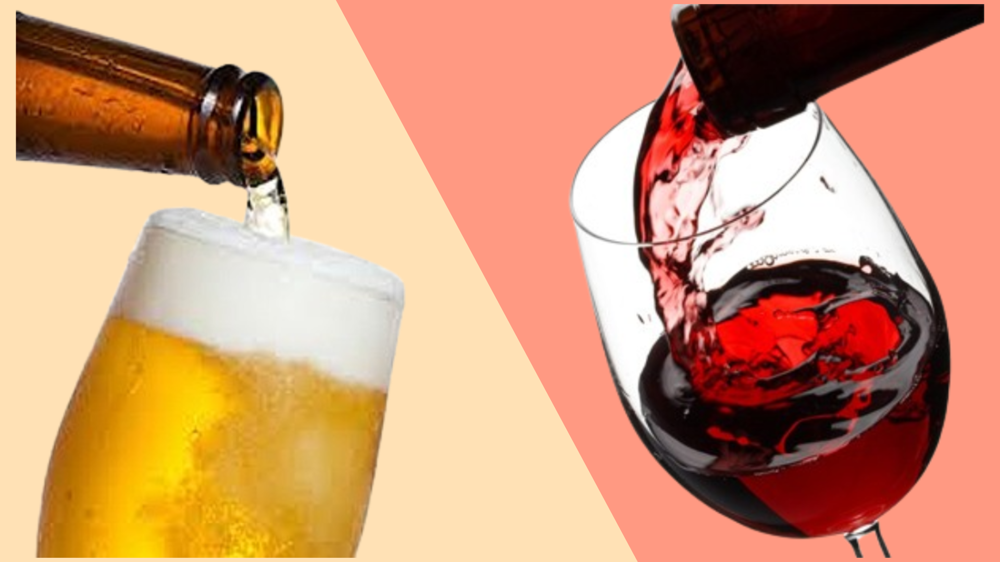

Cerveja e
sua Origem
Pedro Augusto, Saymon Oliveira, Gabriel Medeiros,Lucas Vinicius, Rafael
Acredita-se que a cerveja tenha surgido quase por acidente, a partir da fermentação de cereais umedecidos. Os sumérios, na Mesopotâmia, foram pioneiros, com evidências de produção e consumo já em 6.000 a.C. O Código de Hamurabi (c. 1754 a.C.) até mencionava leis sobre sua produção e venda.
Para os antigos egípcios, a cerveja era parte da dieta diária e até mesmo salário para trabalhadores das pirâmides.
Embora os gregos e romanos fossem mais conhecidos pelo vinho, a cerveja era consumida pelas classes trabalhadoras e por povos "bárbaros" ao norte, como os celtas e germânicos. Era vista como uma bebida rústica, mas sua popularidade já era inegável em muitas regiões.
Durante a Idade Média, os mosteiros europeus tornaram-se centros de inovação na produção de cerveja. Os monges aprimoraram as receitas, adicionando lúpulo (que ajudava na conservação e sabor) e garantindo uma bebida segura em uma época de água nem sempre potável.
Nessa época, a cerveja começou a tomar as rédeas novamente e tornou-se uma bebida popular em todo o mundo.
Em 1516, na Baviera (Alemanha), foi promulgada a Reinheitsgebot, a famosa "Lei da Pureza da Cerveja". Esta lei estabeleceu que a cerveja só poderia ser fabricada com três ingredientes essenciais: malte (de cevada), lúpulo e água.
A levedura, embora crucial para a fermentação, só seria compreendida no século XIX com Louis Pasteur.